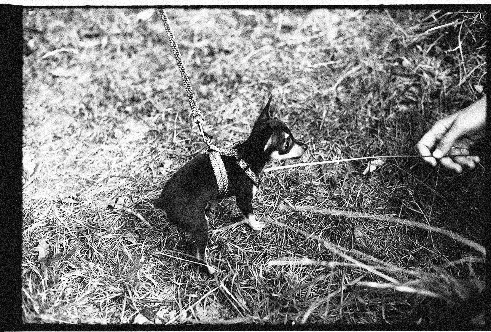
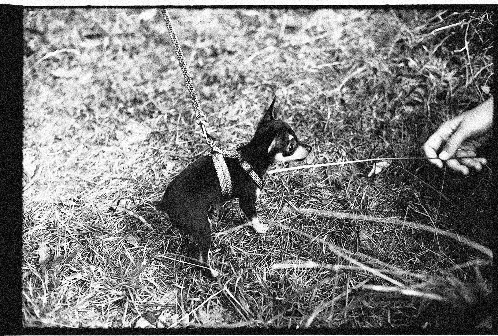

BRING HOME A PAW!
Adopting or fostering a dog can be a very rewarding experience for
both you and the dog. Here are some things to consider when making
this decision:
Adopting a Dog:
-
When you adopt a dog, you are giving a forever home to a dog who
may have been surrendered or abandoned. This can be a very
fulfilling experience.
-
You will have to fill out an adoption application and go through
an adoption process, which may involve a home visit and other
requirements.
-
You may need to pay an adoption fee, which can vary depending on
the shelter or rescue organization.
-
Adopted dogs may come with unknown backgrounds or health issues,
so be prepared to potentially deal with those issues.

Fostering a Dog:
-
When you foster a dog, you are providing a temporary home for a
dog who may need some extra care or time before they are ready
for adoption.
-
Fostering a dog can be a great way to help out a local shelter
or rescue organization, and it can be a good option if you are
not ready to commit to a forever home for a dog.
-
Fostering a dog can be a good way to test the waters of pet
ownership, as you can get a sense of what it's like to care for
a dog without making a permanent commitment.
-
Foster dogs may come with some behavioral or medical issues that
you will need to work through, so be prepared to put in some
extra time and effort.
 

Ultimately, whether you decide to adopt or foster a dog, it's
important to remember that owning a dog is a big responsibility and
requires time, effort, and financial resources. Make sure you are
ready for this commitment before taking on a new furry friend.